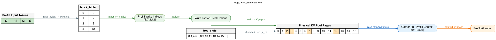
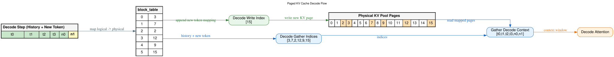

Paged KV Cache¶
问题：KV Cache 的显存碎片¶
07-kv-cache.md 中我们讲到，KV Cache 需要在显存中为每个序列缓存所有层、所有 token 的 K 和 V。传统做法是连续分配——每个序列预留一大段连续显存。
| Text Only | |
|---|---|
1 2 3 4 5 | |
三个问题：
- 过度预分配：不知道序列最终多长，必须按 max_len 预留，大部分用不上
- 碎片化：序列结束释放后留下各种大小的空洞，新的序列进来可能 "总空间够但装不下"(类似 4K 页的物理内存管理问题)
- 无法共享：并行 beam search 时多个候选序列的 prompt 相同，各自的 KV Cache 却要各存一份
Paged KV Cache 的核心思想¶
来自 vLLM 的 PagedAttention 论文。借鉴操作系统虚拟内存分页的思路：
- 将 KV Cache 切分为固定大小的 物理页（比如每页存 16 个 token 的 KV）
- 每个序列的逻辑位置通过 页表 映射到物理页
- 物理页不连续也没关系，页表负责地址翻译
注意：图中的 Prefill/Decode 流程为了简洁，画成 1 个 token 对应 1 个逻辑块 → 1 个物理页。实际中每页存多个 token（典型值是 16 或 32 个），页表行数 = ceil(token 数 / 每页 token 数)。如果 1 token 就占 1 页，页表开销和分页收益就不划算了。后面 Decode 流程图中 n0、n1 分别各占一页（页 9、页 15），也只是为了展示"页满了需要分配新页"的逻辑。
| Text Only | |
|---|---|
1 2 3 4 | |
Prefill 写入流程¶
下面这张图展示了 Paged KV Cache 在 Prefill 阶段的完整数据流：

从左到右 6 步：
1. Prefill Input Tokens（绿色）¶
4 个 prompt token t0, t1, t2, t3 到达。
2. block_table（页表分配）¶
| Text Only | |
|---|---|
1 2 3 4 5 | |
从 free_slots（底部空闲页列表 [0,1,4,5,6,8,9,10,11,13,14,15,...]）中分配 4 个物理页给该序列，建立页表映射。物理页互不相邻（3, 7, 2, 12 散落各处），但逻辑块 0→1→2→3 是连续的。
3. Prefill Write Indices¶
从页表提取目标物理地址：[3, 7, 2, 12]。
4. Write KV for Prefill Tokens¶
将每个 prefill token 的各层 K、V 写入对应物理页。t0→页3，t1→页7，t2→页2，t3→页12。物理池中这 4 页被标记为已占用（橙色）。
5. Gather Full Prefill Context¶
注意力计算前，需要把所有 token 的 KV 按逻辑顺序拼好：[t0, t1, t2, t3]。通过页表反查——逻辑块 0 在物理页 3，逻辑块 1 在物理页 7……gather 出连续的逻辑视图。
6. Prefill Attention¶
Gather 出的完整 context window 送入注意力计算。
Decode 阶段¶
Prefill 完成后，prompt 的 KV 已在物理页中。Decode 时每次生成 1 个新 token，需要：(1) 写入新 token 的 KV (2) 读出全部历史 KV 做注意力。下图展示了一次 Decode step 的完整数据流：

场景设定¶
Prefill 已完成，页表已有 4 行映射（块0→页3, 块1→页7, 块2→页2, 块3→页12），存储了 t0-t3。已经 decode 了一轮生成了 n0（写入了页 9），这是第二轮 decode，当前新 token 为 n1（黄色高亮）。
1. Decode Step（最左，绿色 + 黄色）¶
逻辑视图：历史 token t0, t1, t2, t3（绿色）+ 已生成的 n0（绿色）+ 新 token n1（黄色）。历史 token 的 KV 全在物理页中，不需要重新计算 K/V 投影。
2. block_table — 追加新映射¶
| Text Only | |
|---|---|
1 2 3 4 5 6 7 | |
n1 导致页 9 满了（假设每页 1 个 token），需要从 free_slots 分配新页 15，页表新增 块5→页15。
3. Decode Write Index¶
从页表提取新 token 要写入的物理页：[15]。只写 1 页——Decode 每次只产出 1 个 token。
4. Physical KV Pool Pages — 写入 + 读取¶
- 写入（绿色箭头）：n1 的各层 KV 写入物理页 15（橙色 = 已占用）
- 读取（蓝色箭头）：页表遍历所有逻辑块，得到物理地址
[3, 7, 2, 12, 9, 15]——这就是全部上下文
5. Decode Gather Indices¶
从页表提取全部上下文对应的物理地址：[3, 7, 2, 12, 9, 15]。注意和 Prefill 时的 [3, 7, 2, 12] 相比，多了 [9, 15]——这是 decode 阶段逐步追加的。
6. Gather Decode Context¶
按逻辑顺序 gather 出完整上下文：[t0, t1, t2, t3, n0, n1]。注意这里的 gather 不是把物理页的 KV 数据搬走——只是用页表做逻辑到物理的地址翻译，注意力 kernel 直接按页表索引去对应物理页读取 K/V。
7. Decode Attention¶
当前 token n1 的 Q 去乘 gather 出的全部 K，得到注意力权重，再加权求和 V。这就是典型的 1×S 单行注意力。
Prefill vs Decode 流程对比¶
| Prefill | Decode | |
|---|---|---|
| 写入页数 | S 页（所有 prompt token） | 1 页（1 个 token） |
| 读取页数 | S 页 | S+gen 页（所有历史 + 已生成） |
| 页表操作 | 新建多行映射 | 可能追加 1 行（页满时） |
| Gather 量 | S 个地址 | S+gen 个地址 |
| 瓶颈 | 计算密集 | 带宽密集 + 页表查找 |
传统方式 vs Paged（回顾）¶
零碎片¶
物理页大小固定，任何序列用完了就还给 free_slots。新序列来直接取空闲页，不存在 "总空间 8GB 但最大连续段只有 2GB" 的问题。就像操作系统不会因为物理内存碎片化而无法分配——页表抹平了物理不连续。
按需分配¶
不再预分配 max_len，序列实际生成多少就分配多少页。一个生成 10 token 的回复和一个生成 5000 token 的回复，占用的页数自然不同。
共享 prompt KV¶
并行 beam search 或 speculative decoding 时，多个候选序列共享完全相同的 prompt。它们的页表前几行可以指向相同的物理页（只读），不必各自复制。
| Text Only | |
|---|---|
1 2 3 4 5 | |
总结¶
| 传统连续分配 | Paged KV Cache | |
|---|---|---|
| 分配方式 | 预分配 max_len | 按页按需分配 |
| 碎片 | 严重 | 零碎片 |
| 内存利用率 | ~20-40% | ~90%+ |
| 共享 prompt KV | 不支持 | 页表指向相同物理页 |
| 复杂度 | 简单 | 需要页表管理 |
| 额外开销 | 无 | 页表查找 + gather |
Paged KV Cache 本质是用页表的间接寻址，换取了零碎片、按需分配、KV 共享三个收益。每个 token 的 KV cache 写入和读取时多了一次页表查找，但这点开销相比碎片浪费的显存和吞吐损失完全可以忽略。
这就是 vLLM 能以远超 HuggingFace Transformers 的吞吐服务 LLM 的核心原因之一。